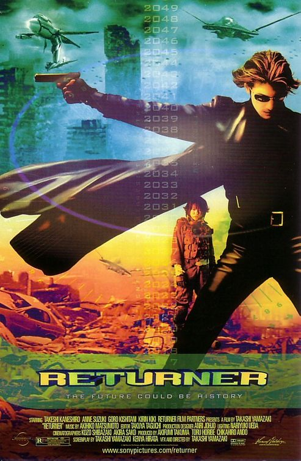
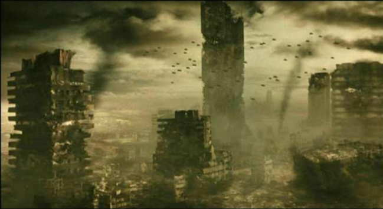
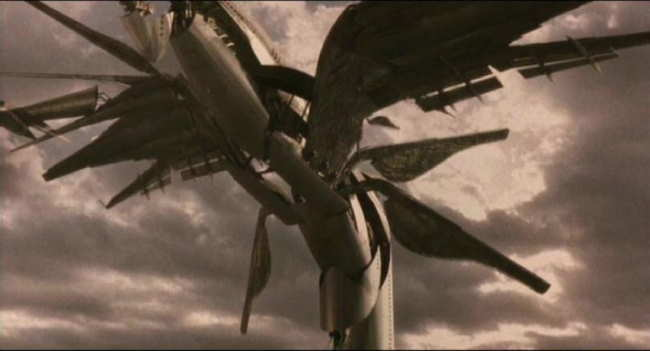
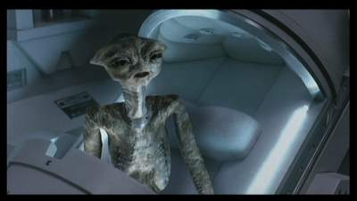
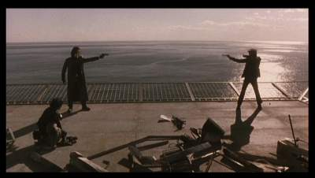

Movie review by : SFAM
Year : 2002
Directed by : Takashi Yamazaki
Written by : Kenya Hirata, Takashi Yamazaki
Degree of Cyberpunk visuals : Medium
Correlation to Cyberpunk themes : Low
Rating : 6/10
Key cast members :

Overview: OK, so you don't have a huge budget or any orginal ideas but you still want to make a cool Scifi flick? Answer: Just merge together little bits from lots of popular scifi movies, and make sure you get good actors with nice chemistry. This is in essence what Yamazaki has done. He's literally taken E.T., the Terminator futuristic dystopia time travel thing, only he substitued Independance Day Aliens (and their technology) that look like E.T. for the exterminators, and a cute asian chick for Reece. Add in an asian mafia group to mix things up, and to top it all off, Yamazaki stole matrix-like action and cinematography looks to bring this project all together.

Truly, this movie has grown on my since I first watched it. And looking at it from a cyberpunk lens, it truly fits well. While on the surface, this idea of merging every popular scifi movie together into one might appear to be a complete and utter mess, but it sorta works as an enjoyable, present day cyberpunk flick. Even wierder than the grand larceny of the various movies is the overt nods to many of the scenes from those movies. Yamazaki isn't hiding anything here - he knows that we will know he has stolen all his key elements. So instead of shoving this under the "plot" table, a number of the scenes are literally duplicate nods from these movies. This more than anything rises Returner up from the run-of-the-mill copycats to something more interesting - almost Tarantino like, but far more overt.

The Story: Milly (Anne Suzuki) is an average foot soldier serving in the last gasp of mankind, 80 years in the future where alien invaders have all but wiped out humananity. As a last gasp effort to save the human race, a group of scientists have been trying to develop a time travel machine to send someone back to when the aliens first arrived - they believe it was the first alien that called the others to destroy the earth, so if they could just go back in time and kill it, maybe the rest would not have come. Through an odd twist of fate, Milly ends up being the one sent back to save Mankind.
Milly hooks up with this two-bit hoodlum named Miyamoto (Takeshi Kaneshiro), who has devoted his life to avenging his childhood friend's death at the hands of the local mafia. Milly coerces Miyamoto into helping her find the alien who recently crash landed so she can kill it. The story gets convoluted when the mafia gets involved - they see power in the alien's weapontry. From there, the chase is on to both avenge the mafia and find and deal with the alien.
The Acting: Again, while this wierd amalgomation of big production scifi films could turn out to be an utter mess, its the chemistry between Milly and Miyamoto which saves it. They are wonderful together. On second viewing, I found I liked their chemistry even more. Also, the evil mafia leader, Mizoguchi (Goro Kishitani) is pretty fun as an over-the-top bad guy. He does everything from blow away little kids, to engaging in gratuitous breast groping, to conducting repeated attempts at gangster coolness.

The FX: Even though they are low budget, they work. Even the matrix-like coolness effects work to some extent. The problem is getting around the obvious thefts that are put in, albeit in a different light. Its hard, for instance, to see E.T. as the bad guy. The surround sound FX are also pretty well done, with nice positional FX and good deep bass.
The Action: Again, think Matrix Rip-off here, complete with the various high kicks into people, along with your average asian gangster shootout movies. We also get some fun little ID4 alien technology fights, force field and all. While not original, it's at least consistently well done. And while the story and action are well enough put together to keep you engaged, again, its really the interplay between Milly and Miyamoto that makes this movie work. Their performances make you care for these two characters far more than you should. I would almost liken it to a Jonny Depp-like saving of the Pirates of the Caribbean. Also, there's a wonderful little time-travel twist at the end which is truly heartwarming.

Danger, Will Robinson, Danger!: By the way, if you get this movie, for Godsakes, whatever you do, DON'T use the english dubbing. We're talking 70s chop-saki bad movie dubbing here!
The Bottom Line: Returner is one of those hard ones to judge in that it has some clear sucky elements (no original ideas, for instance). But just as clearly, the director both realizes this and plays off it. Moreso, the performances by the two leads make returner easily watchable. Again, fair warning, we're not talkin masterpiece here, and had I not given it 6 stars, I probably would have dropped it down to 3 (meaning you either buy the director is doing the rip off in an intelligent way, or you decided this is just tacky in the extreme). But in the end I decided it is a decent low-budget movie that hits on enough cylinders to make it worthwhile.